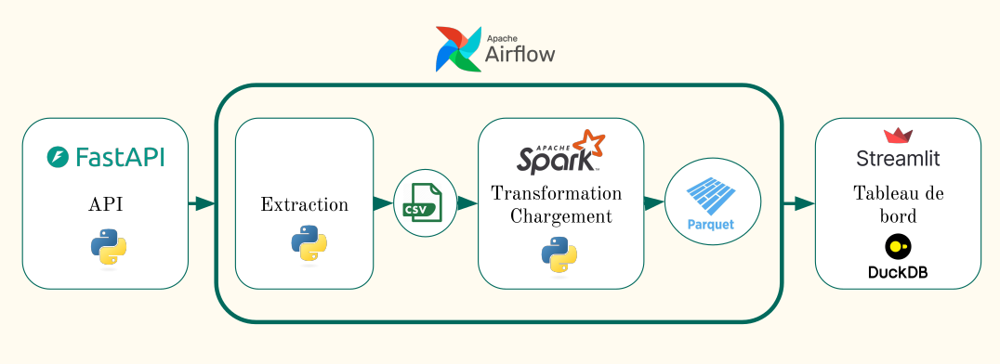

Projet data engineering
📌 Bank branch footfall
Objectif : Automatisation du suivi et de l’analyse du trafic en agence bancaire.
Stack : FastAPI, PySpark, Airflow, Docker, DuckDB, Streamlit
Diagramme de flux de données
Liens : App live | API live | Code Source